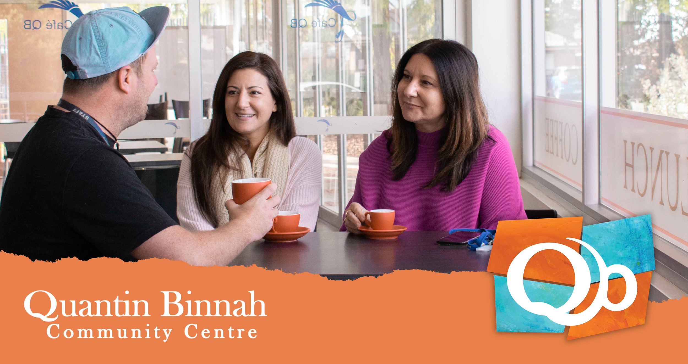

Craft & Caffeine
Drop in for craft and a cuppa, Monday to Wednesday.
Werribee, Victoria
Community craft and cafe skills at Cafe QB.

Cafe QB, 61 Thames BoulevardThe purpose
Creativity gives us a reason to sit down together. Community gives us a reason to stay.
Creating Villages runs community activities for a range of ages and needs. Current dates are shared on Facebook.
Drop in for craft and a cuppa, Monday to Wednesday.
All ability social craft for adults.
Creative activity that brings people together.
Messy play for young children and families.
Shared food paired with a themed activity.
A social meal with connection at its centre.
Visit Craft & Caffeine
Drop in Monday to Wednesday, 9:30am to 4pm. The program closes on public holidays and school holidays.